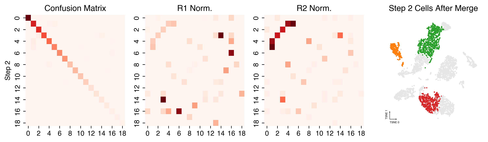
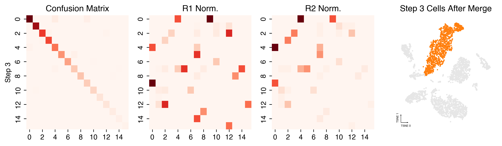
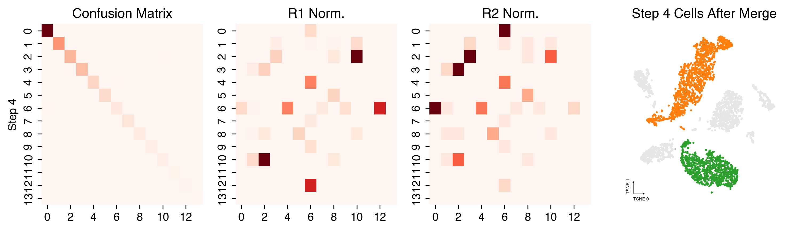
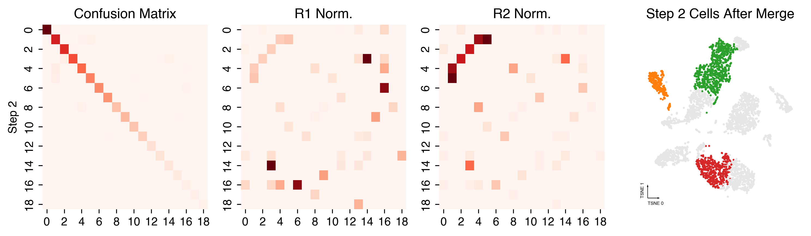
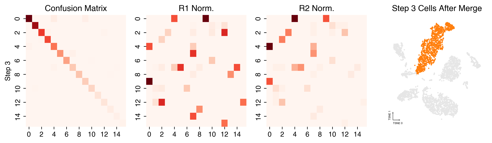
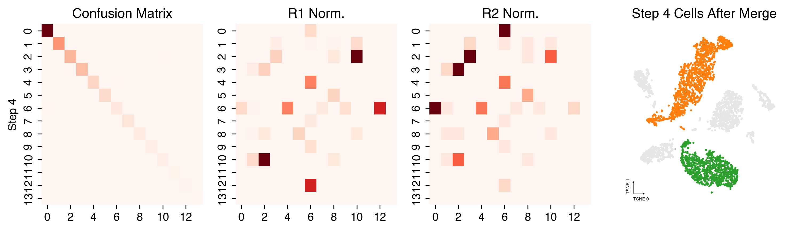

Consensus Clustering
Contents
Consensus Clustering#
Purpose#
The purpose of this step is to run consensus clustering.
Input#
Cell-by-components matrix from the decompusition analysis.
Output#
Adata file with cluster annotated.
Import#
import pathlib
import anndata
import numpy as np
import pandas as pd
import seaborn as sns
import matplotlib.pyplot as plt
from ALLCools.clustering import ConsensusClustering, Dendrogram, get_pc_centers
from ALLCools.plot import *
Parameters#
# clustering name
clustering_name = 'L1'
# input data
cell_meta_path = '../100kb/CellMetadata.PassQC.csv.gz'
adata_path = 'adata.with_coords.mcad'
coord_base = 'tsne'
# ConsensusClustering
n_neighbors = 25
metric = 'euclidean'
min_cluster_size = 10
consensus_rate = 0.5
leiden_repeats = 500
leiden_resolution = 1
random_state = 0
n_jobs = 40
train_frac = 0.5
train_max_n = 500
max_iter = 20
target_accuracy = 0.97
# Dendrogram via Multiscale Bootstrap Resampling
nboot = 10000
method_dist = 'correlation'
method_hclust = 'average'
plot_type = 'static'
Load Data#
cell_meta = pd.read_csv(cell_meta_path, index_col=0)
adata = anndata.read_h5ad(adata_path)
Consensus Clustering#
cc = ConsensusClustering(model=None,
n_neighbors=n_neighbors,
metric=metric,
min_cluster_size=min_cluster_size,
leiden_repeats=leiden_repeats,
leiden_resolution=leiden_resolution,
consensus_rate=consensus_rate,
random_state=random_state,
train_frac=train_frac,
train_max_n=train_max_n,
max_iter=max_iter,
n_jobs=n_jobs,
target_accuracy=target_accuracy)
cc.fit_predict(adata.obsm['X_lsi'])
Computing nearest neighbor graph
2022-08-09 14:47:10.035813: W tensorflow/stream_executor/platform/default/dso_loader.cc:64] Could not load dynamic library 'libcudart.so.11.0'; dlerror: libcudart.so.11.0: cannot open shared object file: No such file or directory
2022-08-09 14:47:10.035848: I tensorflow/stream_executor/cuda/cudart_stub.cc:29] Ignore above cudart dlerror if you do not have a GPU set up on your machine.
Computing multiple clustering with different random seeds
Repeating leiden clustering 500 times
Found 16 - 21 clusters, mean 19.8, std 0.77
Summarizing multiple clustering results
4865 cells assigned to 21 raw clusters
10 cells are multi-leiden outliers
=== Start supervise model training and cluster merging ===
=== iteration 1 ===
21 non-outlier labels
Balanced accuracy on the training set: 0.946
Balanced accuracy on the hold-out set: 0.925
Merging 2 clusters.
=== iteration 2 ===
19 non-outlier labels
Balanced accuracy on the training set: 0.965
Balanced accuracy on the hold-out set: 0.958
Merging 3 clusters.
=== iteration 3 ===
16 non-outlier labels
Balanced accuracy on the training set: 0.969
Balanced accuracy on the hold-out set: 0.963
Merging 2 clusters.
=== iteration 4 ===
14 non-outlier labels
Balanced accuracy on the training set: 0.980
Balanced accuracy on the hold-out set: 0.973
Stop iteration because current accuracy 0.973 > target accuracy 0.970.
=== Assign final labels ===
Assigned all the multi-leiden clustering outliers into clusters using the prediction model from final clustering version.
Final ten-fold CV Accuracy on all the cells: 0.966
Plot ConsensusClustering Details#
Individual Leiden runs with different random states#
adata.obs[f'{coord_base}_0'] = adata.obsm[f'X_{coord_base}'][:, 0]
adata.obs[f'{coord_base}_1'] = adata.obsm[f'X_{coord_base}'][:, 1]
fig, axes = cc.plot_leiden_cases(coord_data=adata.obs,
coord_base=coord_base)

Merging steps#
cc.plot_steps(coord_data=adata.obs, coord_base=coord_base)

 





Plot Final Clustering Results#
Cluster Lables#
adata.obs[clustering_name] = cc.label
fig, ax = plt.subplots(figsize=(4, 4), dpi=250)
_ = categorical_scatter(data=adata.obs,
ax=ax,
hue=clustering_name,
coord_base=coord_base,
palette='tab20',
text_anno=clustering_name,
show_legend=True)

Final Prediction Probability#
adata.obs[clustering_name + '_proba'] = cc.label_proba
fig, ax = plt.subplots(figsize=(4, 4), dpi=250)
_ = continuous_scatter(data=adata.obs,
ax=ax,
hue_norm=(0, 1),
hue=clustering_name + '_proba',
coord_base=coord_base)

Prediction Probability Per Cluster#
fig, ax = plt.subplots(figsize=(6, 3), dpi=300)
sns.violinplot(data=adata.obs,
x=clustering_name,
y=clustering_name + '_proba',
scale='width',
linewidth=0.5,
cut=0,
ax=ax)
ax.set(ylim=(0, 1), title='Prediction Probability Per Cluster')
ax.xaxis.set_tick_params(rotation=90)
ax.grid(linewidth=0.5, color='gray', linestyle='--')
sns.despine(ax=ax)

Calculate Cluster Dendrogram#
# using the cluster centroids in PC space to calculate dendrogram
pc_center = get_pc_centers(adata, group=clustering_name, obsm='X_lsi')
# calculate the cluster dendrogram using R package pvclust
dendro = Dendrogram(nboot=nboot,
method_dist=method_dist,
method_hclust=method_hclust,
n_jobs=n_jobs)
dendro.fit(pc_center)
Creating a temporary cluster...done:
socket cluster with 40 nodes on host ‘localhost’
Multiscale bootstrap... Done.
fig, ax = plt.subplots(figsize=(9, 3), dpi=250)
_ = plot_dendrogram(dendro=dendro.dendrogram,
linkage_df=dendro.linkage,
ax=ax,
plot_non_singleton=False,
line_hue=dendro.edge_stats['au'], # au is the branch confidence score, see pvclust documentation
line_hue_norm=(0.5, 1))

Save#
cc.save(f'{clustering_name}.ConcensusClustering.model.lib')
dendro.save(f'{clustering_name}.Dendrogram.lib')
adata.write_h5ad(adata_path)
adata
AnnData object with n_obs × n_vars = 4875 × 252901
obs: 'AllcPath', 'mCCCFrac', 'mCGFrac', 'mCGFracAdj', 'mCHFrac', 'mCHFracAdj', 'FinalReads', 'InputReads', 'MappedReads', 'DissectionRegion', 'BamFilteringRate', 'MappingRate', 'Plate', 'Col384', 'Row384', 'FANSDate', 'Slice', 'Sample', 'leiden', 'tsne_0', 'tsne_1', 'L1', 'L1_proba'
var: 'chrom', 'end', 'start'
uns: 'leiden', 'neighbors', 'umap'
obsm: 'X_lsi', 'X_tsne', 'X_umap'
obsp: 'connectivities', 'distances'